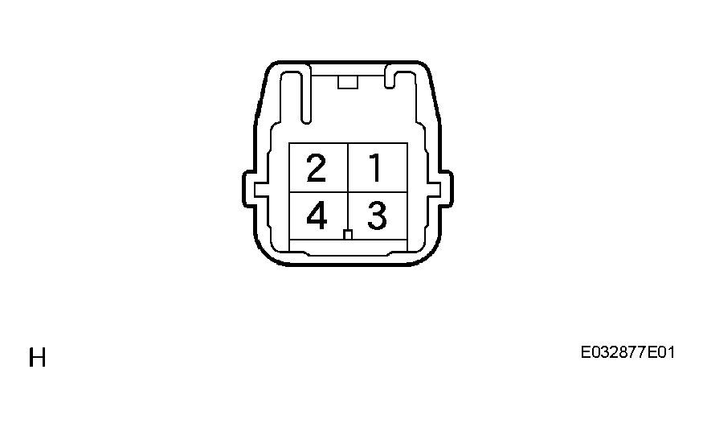

Measure the resistance of the resistor.Standard resistance
TESTER CONNECTION AND SPECIFIED CONDITION CHART
| Tester Connection |
Specified Condition |
| 1 - 2 |
1.386 to 1.595 Ω |
| 1 - 3 |
0.363 to 0.418 Ω |
| 1 - 4 |
2.595 to 2.986 Ω |
If the result is not as specified, replace the blower resistor.

Courtesy of © TOYOTA, LICENSE AGREEMENT TMS1002